Trade Idea Generation – Qualitative Processing
The deeper qualitative research toolkit that follows L30's KPIs & MOP. On top of the KPIs you infer from presentations, you layer five more sources — earnings-call transcripts, management track record, the board of directors, insider/founder ownership, and analyst estimates, ranges & ratings — to appraise the PEOPLE and EXPECTATIONS behind the numbers. Worked on Abercrombie & Fitch (NYSE:ANF) and HubSpot (NYSE:HUBS).
L30 taught you to infer a company's KPIs and Management Operating Plan (MOP) from its Investor Relations materials. This lesson layers five more qualitative sources on top. Earnings-call transcripts tie up any KPIs the written comms missed (scan for the numbers, skip the mumbo-jumbo). Then you appraise the PEOPLE — rank management into the Alpha -> Primary/Secondary Betas -> Tertiary Betas -> Deltas hierarchy, check the board keeps the CEO in check, and read insider/founder ownership (big founders still holding = they want the stock at these levels or higher; small sales relative to a huge stake are not bearish). Finally you read the analyst estimate RANGE, mean consensus and ratings, looking for ROOM FOR CHANGE — upgrades and revisions are themselves catalysts. Do it once per stock and most KPIs carry across the whole sector. The endpoint is always the same: does the qualitative assessment support or deny the valuation and the positive/negative-outlier status?
The gist
- Five layers get added on top of L30's KPIs/MOP: Earnings-Call Transcripts, Management Track Record, The Board of Directors, Insider Stock & Stock-Option Ownership, and Research Analyst Estimates, Range & Ratings.
- Earnings-call transcripts tie up loose KPIs: management often gives numbers verbally that were never written down, so scan the transcript, let your eye zoom in on the numbers, and skip the mumbo-jumbo. ANF Q4'20 quant ranking: Industry 3/22, Sector 16/436, Overall 108/3843; CEO Fran Horowitz grew digital penetration to 54% of revenue from 33%, removed 1.1M gross sq ft (17% of base, 137 store closures), expanded gross profit rate by 110 bps, and ended the year with $1.3B liquidity.
- Rank the people: beneath the Alpha (the CEO) sit Primary and Secondary Betas, then Tertiary Betas (low-level management), then Deltas (the workers). The Alpha + Primary Betas drive the product, MOP, KPIs and ultimately Revenue & Earnings. The board must NOT be subservient to the CEO — high integrity keeps management in check.
- Insider/founder ownership (HubSpot, Fidelity): co-founder & CTO Dharmesh Shah holds 1,542,891 shares x $558 = $860,933,178; CEO Brian Halligan 644,284 x $558 = $359,510,472 — together ~$1.22B. Their sales are tiny vs their holdings, so 'the big guys/founders are still in' — insider selling is NOT automatically bearish.
- Analyst estimates & ratings (ANF, Yahoo): FY2022 EPS range $0.89-$1.94, mean $1.50; revenue range $3.36B-$3.59B, mean $3.5B; rating average 2.5 (1 Strong Buy .. 5 Sell); price-target Low $22.00 / Avg $34.11 / High $46.00. As a trader you want ROOM FOR CHANGE — upgrades and estimate revisions are themselves catalysts.
- Do the work once and most KPIs apply across the whole sector (plus a few idiosyncratic to the stock). The endpoint: refer back to Valuation and ask — does the qualitative assessment SUPPORT or DENY the valuation and the positive/negative-outlier status?
Additional qualitative work — five more layers
- L30 covered stage one of the qualitative analysis: identify a company's KPIs and infer its Management Operating Plan (MOP) from them.
- This lesson layers five more qualitative sources onto that: Earnings-Call Transcripts; Management Track Record; The Board of Directors; Insider Stock & Stock-Option Ownership; Research Analyst Estimates, Range & Ratings.
- The first (transcripts) finishes the KPI job; the rest appraise the PEOPLE and the market EXPECTATIONS behind the numbers.
L30 found WHAT drives the business (KPIs -> MOP). L31 asks WHO drives it and what the market already expects of it — the two together are a full qualitative assessment.
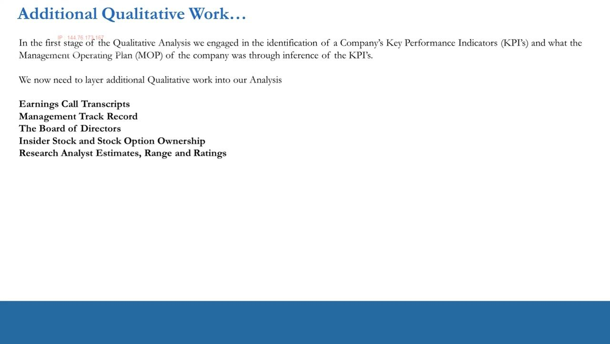
Earnings-call transcripts — tie up the loose KPIs
- Having gone through financial statements and company presentations for KPIs, use the earnings call to tie up any KPIs still missing.
- You can typically get most or all of the main KPIs from the transcript if they aren't on the IR website — management may communicate them verbally, not in writing. Double-check, then go straight to the transcript.
- An earnings call is management verbally reporting results to shareholders and the public on the day quarterly earnings release; the calls are transcribed and uploaded online (Seeking Alpha, Motley Fool, etc.).
- Usually the Head of IR hosts and the CEO & CFO literally tell you which numbers to focus on. The calls are scripted and rehearsed — it is the information management WANT you to focus on.
- The trick: scan the transcript, let your eye zoom in on the numbers, and pay less attention to the mumbo-jumbo.
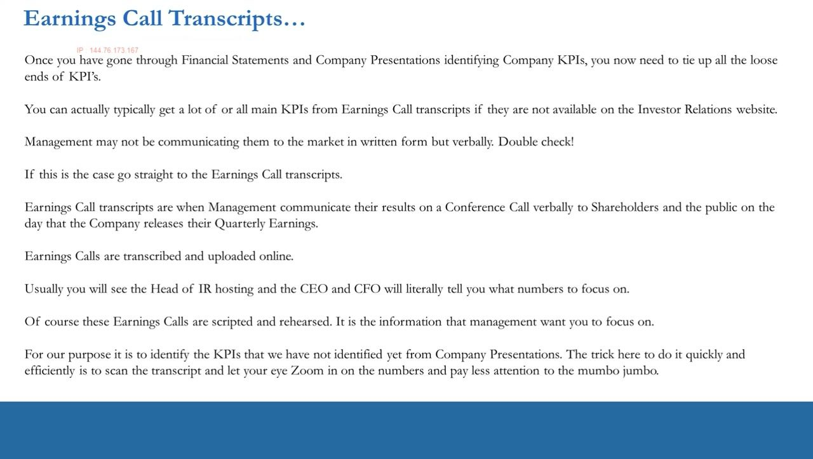
ANF Q4'20 transcript — the quant ranking and the headline numbers
- Worked on Abercrombie & Fitch (NYSE:ANF); Q4 2020 call, March 2, 2021 8:30 AM ET; CEO Fran Horowitz, CFO Scott Lipesky, VP of IR Pam Quintiliano.
- Q4 result headline: EPS of $1.10 beats by $0.27; Revenue $1.12B (-8.29% YoY) beats by $1.36M. About ANF (Seeking Alpha sidebar): Market Cap $2.33B; PE (FWD) 24.74; Rev Growth (YoY) -13.74%; Short Interest 7.41%.
- Seeking Alpha Quant Ranking (Consumer Discretionary / Apparel Retail): ranked in Industry 3 out of 22; in Sector 16 out of 436; Overall 108 out of 3843.
- CEO opening remarks (the KPIs to capture): grew digital penetration to 54% of revenue from 33% last year; removed 1.1 million gross square feet or 17% of the global base; expanded the gross profit rate by 110 basis points; ended the year with $1.3 billion of liquidity.
The quant ranking (Industry 3/22, Overall 108/3843) is what flagged ANF as a positive outlier; the transcript numbers are the qualitative evidence that either supports or denies that ranking.
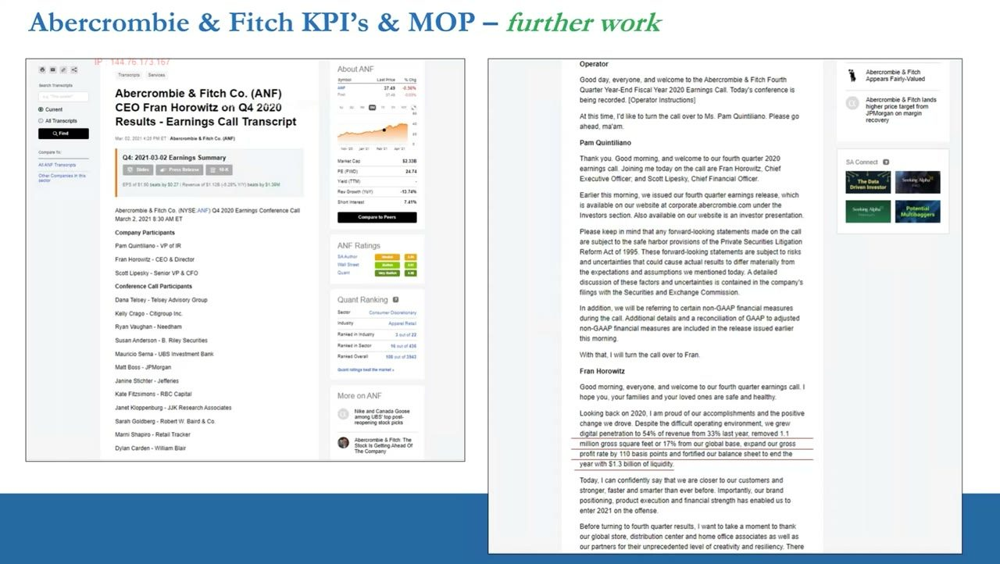
Store optimisation in the transcript — and one KPI set, whole sector
- From the call, the store-footprint KPIs: took out 1.1M gross sq ft / 17% of base in fiscal 2020 (137 locations closed); 129 non-flagship closures removed ~850,000 gross sq ft — 73 A&F stores (~25% of space) and 56 Hollister stores (10%); closed A&F averaged 8,300 gross sq ft vs the preferred 4,500 prototype; 8 A&F flagships closed.
- Inferred MOP: align square footage with digital penetration (the most important profitability lever) — transform from a store-led to a digitally-led model; 50% of leases up for renewal on a rolling 2-year basis keeps the base flexible.
- Many KPIs for one stock are the SAME across other stocks in the sector — do the work once and build a KPI dashboard that carries across the sector.
- Some KPIs are idiosyncratic to a single stock — separate the sector-wide from the stock-specific. The reason a stock is a positive/negative outlier may live in one particular KPI, good or bad.
- Anton will NOT give you every KPI for every GICS/NAICS sector — over time they change and you must learn the process.
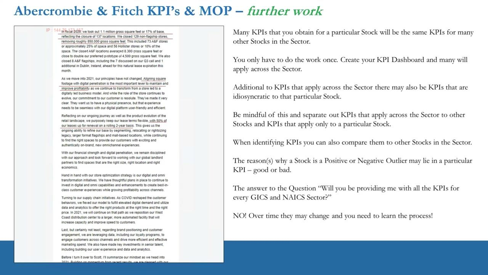
Retail KPI dashboard — the inferred MOP metrics
- Sales: Same-Store Sales; Sales per sq ft; Average Unit Retail (AUR); Average Sale per Customer; Online Sales % vs Physical Location.
- Inventory: Average Inventory; Inventory Turnover; Stock Turnover Days; Sell-through rates.
- Stores: number of locations (end & beginning of period); company-owned vs franchise; total sq ft owned vs leased; Gross Square Feet.
- Brands: number of brands; number of store names. Customers: New-to-File Customers (new in database).
This is the reusable, sector-wide dashboard the ANF work produced — build it once for Apparel Retail and it applies to the peer group.
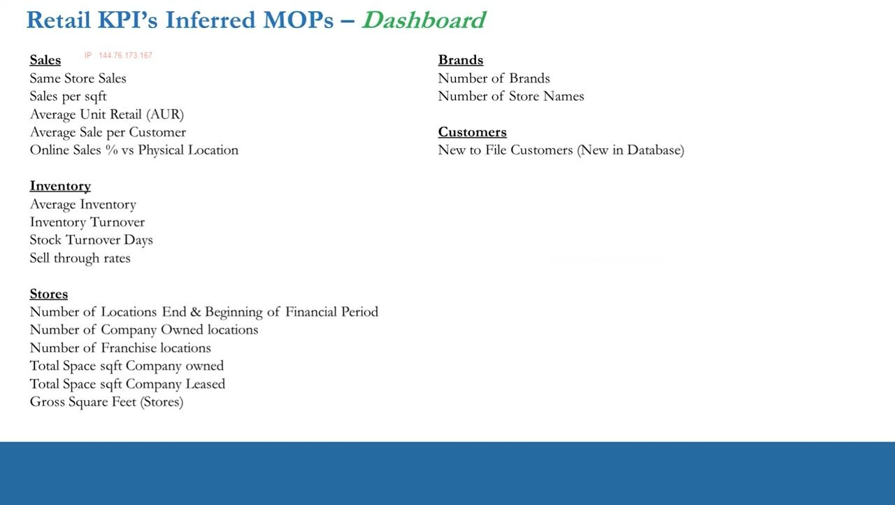
Management track record — rank them into the hierarchy
- Switch to HubSpot (NYSE:HUBS) for the people work. First identify the Alpha (the CEO). Then, at management level, split who is KEY below the CEO (Primary Betas) from the hangers-on / token positions (Secondary Betas).
- Primary / Key Management (Primary Betas): Dharmesh Shah — CTO & Founder (legacy Alpha, subservient to CEO or not?); Kate Bueker — CFO (who looks after the books?); Christopher O'Donnell — Chief Product Officer (no product, no customers); Whitney Sorenson — Chief Architect (no engineering, no product); Andrew Lindsay — Corporate & Business Development (expansion strategy); Kipp Bodner — Chief Marketing Officer (no growth without killer marketing).
- Secondary Betas (by default): Yamini Rangan (Chief Customer Officer); Katie Burke (Chief People Officer); Allison Elworthy (EVP Revenue Operations); John Kelleher (General Counsel); Jeetu Mahtani (EVP Customer Success); Eric Richard (Chief Security Officer & SVP Engineering).
- For The Record — the full hierarchy: beneath the Alpha are Primary and Secondary Betas, then Tertiary Betas (low-level management), then Deltas (the workers). It is the Alpha and the Primary Betas who drive the product, the MOP, the KPIs and ultimately Revenue & Earnings — the success of the company.
A co-founder sitting in a non-CEO seat (Shah as CTO & Founder) raises the 'legacy Alpha' question — is he really subservient to CEO Brian Halligan? — and needs further work; the rest slot cleanly into their tier.
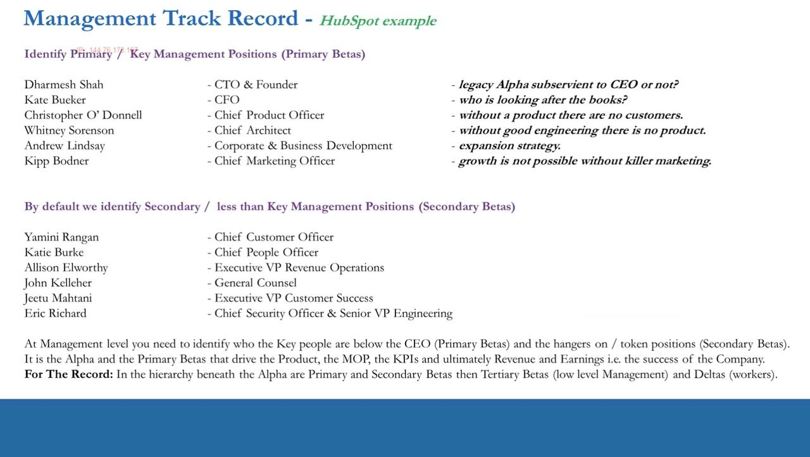
The board of directors — the check on management
- The board is NOT supposed to be subservient to the CEO and management. Look for evidence of political incest among the Betas — high integrity is required to keep the CEO and management in check.
- Board tasks (Standards for the Board, IoD): establish vision, mission and values; set strategy and structure (review external opportunities/threats/risks, choose strategic options, set the risk appetite); delegate to management (delegate authority, then monitor and evaluate, ensure internal controls are effective).
- Also: exercise accountability to shareholders and be responsible to relevant stakeholders — ensure communications both ways are effective, and monitor relations with shareholders.
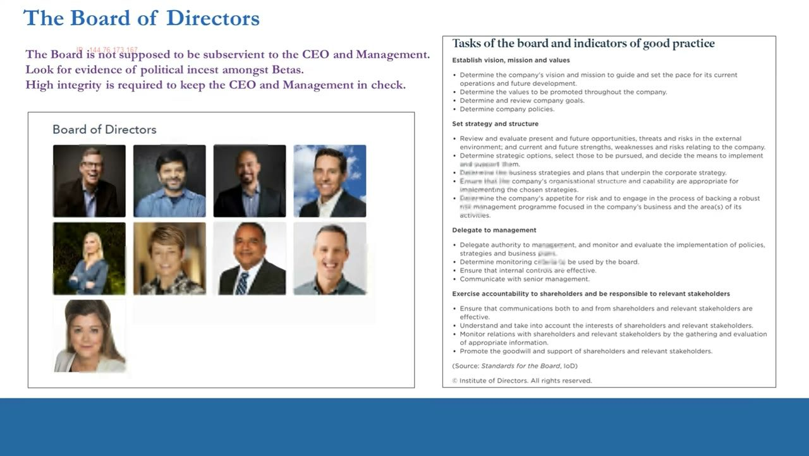
Insider & founder ownership — are the big guys still in?
- Source Fidelity, HUBS at $526.45 (04/30/2021). Top insiders by total holdings: Dharmesh Shah (CTO) 1,542,891.00; Brian Halligan (CEO) 644,284.00; then Sherman 68,600, Kinzer 67,135, Rangan 52,216, Kelleher 51,893, Simon 43,608, Bueker 41,079, Madeley 32,809, Bohn 18,339.
- Founder Dharmesh Shah is BY FAR the largest shareholder, ahead of CEO Halligan — likely the real 'Big Daddy Alpha' / Founder (maybe not a CEO type, more a builder). Ownership confirms the management hierarchy.
- Value the stakes at $558/share: Shah 1,542,891 x 558 = $860,933,178; Halligan 644,284 x 558 = $359,510,472 — together they own ~$1.22 billion of stock.
- Additional sizeable holders x $558: Donald J Sherman (President) 68,600 = $38,278,800; John Kinzer (CFO) 67,135 = $37,461,330; Michael K. Simon (Director) 43,608 = $24,333,264; Hunter Madeley (Officer) 32,809 = $18,307,422; Lawrence S Bohn (Director) 18,339 = $10,233,162.
- HUBS is NYSE-listed and well past the IPO lock-up (typically 90-180 days).
Insider sales are NOT automatically bearish. Shah's Dec-2020 $15.5M and Feb-2021 $10.1M sells, and Halligan's steady $1M-$4M monthly automatic sells, are tiny against ~$1.22B of holdings — the founders staying so heavily invested says they want the stock at these levels or higher. Insider Sentiment reads Neutral, Sell/Buy 0.00.
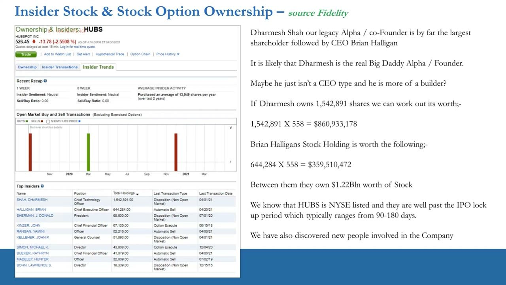
Insider transactions — automatic sells vs the holdings
- Weekly insider transactions (Fidelity, 2-year view). Shah: 40,000 automatic-sell on 12/31/2020 in the $367.07-$395.22 range (~$15.5M, holdings 1,516,485); 20,000 on 02/16/2021 in $503.91-$528.56 (~$10.1M, holdings 1,543,899).
- Halligan runs a steady programmatic sale of ~8,500 shares each month through 2020-2021 (values ~$1.6M to ~$4.3M as the price rose from ~$188 to ~$504), ending at 644,284 holdings.
- These sales are tiny compared to overall holdings — confidence that the founders want the stock to hold or move higher. The big guys / founders are still in.
- Cross-referencing LinkedIn also surfaces the people involved (ex-President J.D. Sherman, ex-CFO John Kinzer, director Michael Simon, ex-CSO Hunter Madeley, GC-era backer Larry Bohn of General Catalyst, whose firm led HubSpot's first $5M round in Sept 2007).
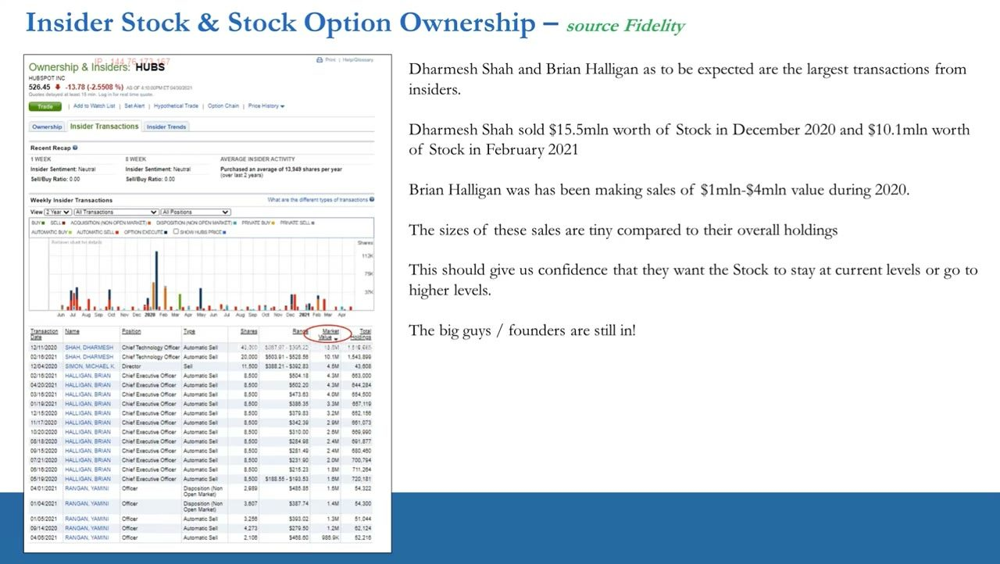
Analyst estimates & range — read the consensus and the outliers
- Back to ANF (Yahoo Finance Analysis tab, at $37.49). FY2022 EPS: 12 analysts, avg $1.50, low $0.89, high $1.94 — half-way is $1.415, but more analysts sit nearer $1.94; a single negative-outlier analyst sets the bottom.
- FY2022 Revenue: avg $3.5B, low $3.36B, high $3.59B — half-way $3.475B, skewed toward $3.59B, again with one negative-outlier at the bottom; FY mean consensus sales growth 12.10%.
- The mean is meaningful because a decent number of analysts cover the stock — the more analysts, the more meaningful and likely-accurate the consensus mean.
- Trade implication: because most analysts are near the top of the range, if ANF guides FY2022 EPS below $1.50 the stock will likely fall. Estimates are dynamic — repeat the analysis each quarter.
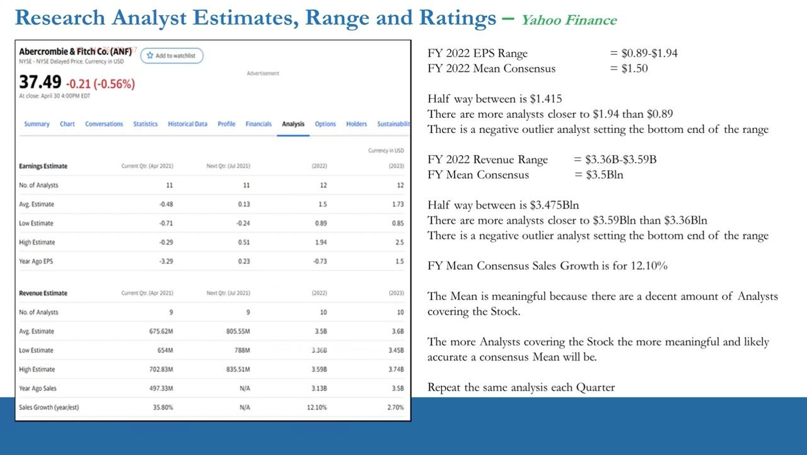
Estimate revisions — a dynamic, catalyst-rich signal
- Analyst estimates are what 'the Market' expects, and they change through the year as analysts react to new information.
- ANF EPS revisions (last 30 days): 4 up for the current quarter, 2 up for next quarter — and it looks like the same analysts are lifting FY2022 and FY2023 too.
- Through a Long lens this is great news; through a Short lens it is a concern.
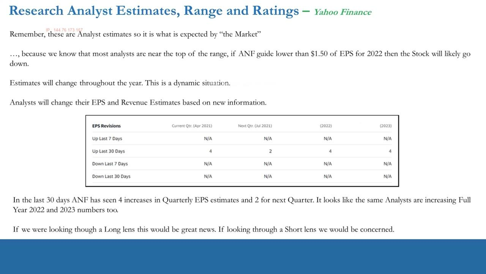
Ratings & price targets — three real ratings, and room for change
- There are essentially 3 ratings: Buy, Hold (Neutral), Sell. 'Strong Buy' just means Buy, 'Underperform' just means Sell, 'Outperform' just means Buy — and it is relative to the stock's SECTOR, not the broad market.
- When an analyst covers several stocks in a sector they must balance buys and sells. ANF consensus rating = 2.5 (scale 1 Strong Buy .. 5 Sell) — between a buy and a hold.
- Price targets: Low $22.00 / Average $34.11 / Current $37.49 / High $46.00. Rating mix shifted from heavy Hold/Underperform in Feb (17 covering: Hold 10, Underperform 4, Sell 2) toward Apr (12: Strong Buy 2, Buy 2, Hold 7).
- There has been 1 upgrade (UBS Neutral->Buy, 4/7/2021) after months of maintained Sell/Hold. The analysts were wrong here: ANF ran from $20 in November to $37 in April and outperformed the Retail Sector.
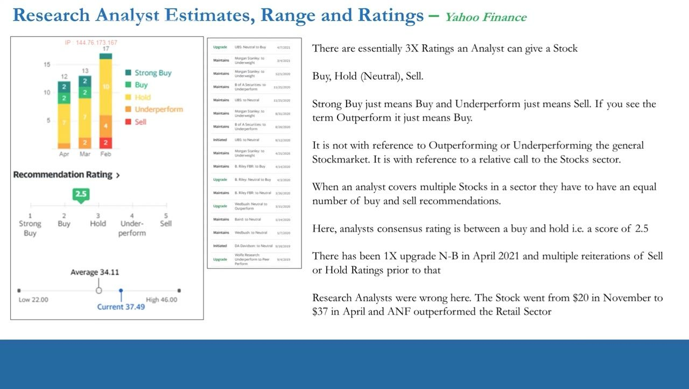
Room for change is the edge
- As traders we want to see ROOM FOR CHANGE in recommendations. Six months prior the average was around Hold-to-Underperform, so there was room for upgrades — and upgrades are themselves catalysts that get the stock moving.
- For Longs, room on the upside means analysts are being too cautious; for Shorts, room on the downside usually means they are in denial.
- If all analysts already carry buy (or sell) ratings you can still go Long (or Short), but beware you may be entering CONSENSUS positioning — caution.
- Remember analysts are career-driven salary men who rarely stick their neck out — which is exactly why the room-for-change edge exists.
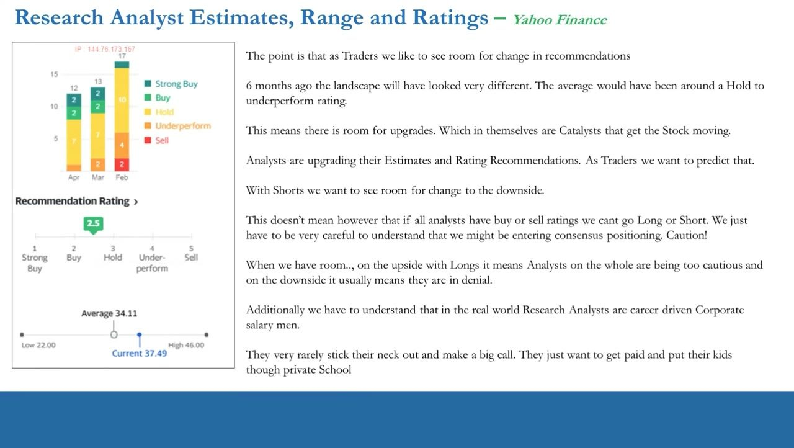
Summary — does the qualitative read support or deny the valuation?
- Anton will not hand you every KPI for every GICS/NAICS sector — you build it yourself by piecing together Annual & Quarterly Reports, Company Presentations and Earnings-Call Transcripts, case by case, until you are good at it.
- You end with a full KPI list for the stock (and, by default, the sector) + an inferred MOP, plus the qualitative market dynamics: management & their track record, the board, insider stock info, and an appreciation of analyst estimates, ranges & ratings.
- ITPM principles at work: Self-Sustainability, Work Ethic, Free Information, Work Smart not Hard. Use videos 30 & 31 as templates / case studies and apply the process case by case to build your own KPI database.
- The valuation gate: on completing the qualitative assessment, refer back to Valuation and ask — does the qualitative assessment SUPPORT or DENY the valuation and the positive/negative-outlier status?
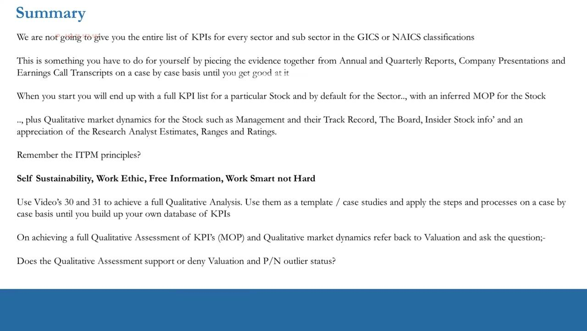
Glossary
- Earnings-call transcriptThe transcribed record of management's verbal quarterly results call (Head of IR hosting, CEO & CFO telling you which numbers to focus on). Used to tie up KPIs that were given verbally but never written into the IR materials — scan for the numbers, skip the mumbo-jumbo. Calls are scripted, so they show what management WANT you to focus on.
- Alpha -> Betas -> Deltas hierarchyAnton's people-ranking. The Alpha is the CEO. Beneath sit Primary Betas (key management / lieutenants) and Secondary Betas (token / hanger-on positions), then Tertiary Betas (low-level management), then Deltas (the workers). The Alpha + Primary Betas drive the product, MOP, KPIs and ultimately Revenue & Earnings. A co-founder in a non-CEO seat is a 'legacy Alpha' question mark (e.g. HubSpot's Dharmesh Shah).
- Board of directors (the check)Must NOT be subservient to the CEO/management — high integrity keeps them in check; watch for political incest among the Betas. IoD board tasks: establish vision/mission/values, set strategy & structure and risk appetite, delegate to management then monitor, and be accountable to shareholders/stakeholders.
- Insider / founder ownershipReading the ownership table (source Fidelity) to confirm the hierarchy and the founders' conviction. At HubSpot, co-founder Dharmesh Shah (1,542,891 x $558 = $860,933,178) out-owns CEO Brian Halligan (644,284 x $558 = $359,510,472) — ~$1.22B combined. Sales tiny vs holdings => founders still in => insider selling is NOT automatically bearish.
- Analyst estimates, range & ratingsThe market's expectations. Read the RANGE (ANF FY22 EPS $0.89-$1.94, mean $1.50; revenue $3.36B-$3.59B, mean $3.5B), the skew (more analysts nearer the top; one negative outlier at the bottom), the revisions, and the ratings (avg 2.5 on 1 Strong Buy..5 Sell; PT Low $22.00 / Avg $34.11 / High $46.00). Three real ratings only: Buy, Hold, Sell — relative to the SECTOR, not the market.
- Room for changeThe trader's edge in ratings/estimates: when consensus sits at Hold/Underperform there is room for UPGRADES, which are themselves catalysts. Room on the upside = analysts too cautious (good for Longs); room on the downside = analysts in denial (good for Shorts). All-buy or all-sell coverage = consensus positioning — trade with caution.
- The valuation gateThe endpoint of the whole qualitative process: having assembled the KPIs/MOP + management, board, ownership and analyst picture, refer back to Valuation and ask whether the qualitative assessment SUPPORTS or DENIES the valuation and the positive/negative-outlier status.